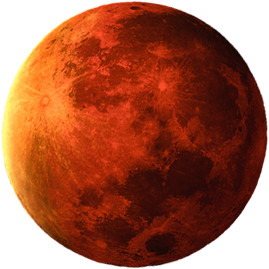

Mars
Terug naar de Home Page
Informatie
- De 4e planeet uit ons zonnestelsel.
- Is vernoemd naar de Romeinse god van de oorlog.
- De gemiddelde temperatuur op mars is -60 graden Celsius.
- De atmosfeer bestaat hoofdzakelijk uit koolstofdioxide (95%), aangevuld met stikstof (3%), het edelgas argon (1,6%) en verder sporen van zuurstof, methaan en water.
- Op het noordelijk halfrond heb je lager gelegen vulkanische vlakten en op het zuidelijk halfrond zijn er met kraters bedekte hooglanden.
- Op mars heb je aan de poolkappen waterijs.
- Grote hoeveelheid water in de bodem in de vorm van permafrost.
Symbool: ♂

↩ Aarde
-
Jupiter ↪